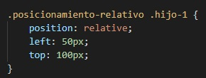
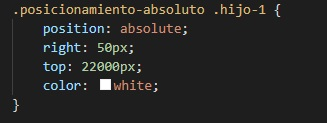

Para comenzar a trabajar con Flexbox tenemos que definir un flex container, asi habilitamos un contexto flex para trabajar con los hijos directos del elemento.
flex-container
flex-wrap
Por defecto los elementos hijos de un contenedor flex intentan todos entrar en una misma linea. Para que se respete el ancho de los elementos hijos usamos esta propiedad
flex-direction
Con esta propiedad definimos el main axis del contenedor. El cross axis (eje transversal) sera la direccion perpendicular al main axis
- row
- row-reverse
- column
- column-reverse
Los items se disponen en el eje x, de izquierda a derecha
Los items se disponen en el eje x, de derecha a izquierda
Los items se disponen en el eje y, de arriba a abajo
Los items se disponen en el eje y, de abajo a arriba
justify-content
- flex-start
- flex-end
- center
- space-between
- space-around
Los items se alinean respecto del inicio del main axis que hayamos definido
Los items se alinean respecto del final del main axis que hayamos definido
Se alinean en el centro del main axis
Los items se distribuyen de manera uniforme
Los items se distribuyen de manera uniforme, pero con un espacio al rededor de cada uno
align-items
- stretch
- flex-start
- flex-end
- center
Los items se ajustan para abarcar todo el contenedor
Los items se alinean al inicio del eje transversal
Los items se alinean al final del eje transversal
Se alinean en el centro del eje transversal
order
Con esta propiedad controlamos el orden de cada item

flex-grow
Definimos cuanto puede llegar a crecer un item en caso de disponer espacio libre en el contenedor
align-self
Nos permite alinear sobre el cross axis a cada item al que le apliquemos esta propiedad
- flex-end
- center
- flex-start
- stretch
El item se alinea al final del eje transversal
El item se alinea al centro del eje transversal
El item se alinea al inicio del eje transversal
El item se ajusta hasta abarcar todo el cross axis, siempre y cuando no tenga definida una altura y el contenedor padre tenga la regla flex-wrap: wrap;
Estas propiedades funcionan independientemente de la alineacion que se haya definido en el contenedor flex con align-items y el padre contenedor sea un flex-container
Posicionamiento relativo
Cuando movemos una caja, el punto de referencia sera sus propios costados
Cuando movemos una caja de manera relativa, el espacio que ocupaba originalmente seguira ocupado
Posicionamiento absoluto
Cuando movemos una caja, el punto de referencia seran los costados del body
top: 22000px;
Cuando movemos una caja de manera relativa, el espacio que ocupaba originalmente quedara libre y otros elementos podran ocuparlo
Relativo + Absoluto
Si queremos cambiar el punto de referencia para un posicionamiento absoluto, debemos hacer relativo al padre
Cuando movemos una caja de manera relativa, el espacio que ocupaba originalmente seguira ocupado
Posicionamiento fijo
Con el posicionamiento fijo, los puntos de referencia seran los costados de la ventana del navegador
Sin importar que hagamos scroll, el elemento se mantendra fijo.
Como ejemplo podemos observar la barra de arriba la cual nos acompaña por toda la pagina.
z-index
Permite cambiar el orden de las capas. Solo funciona si el elemento tiene un posicionamiento relativo, absoluto o fijo
Siempre va figurar el elemento que tenga mayor z-index. Por defecto es 0.